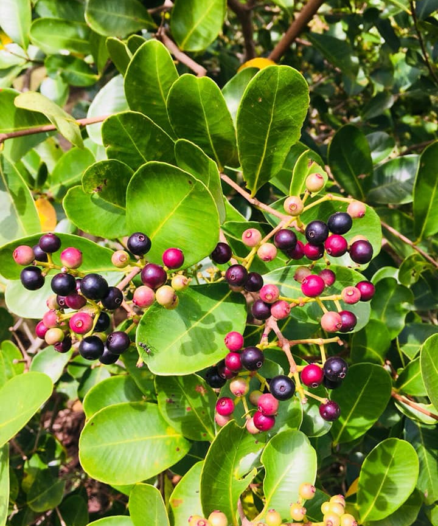
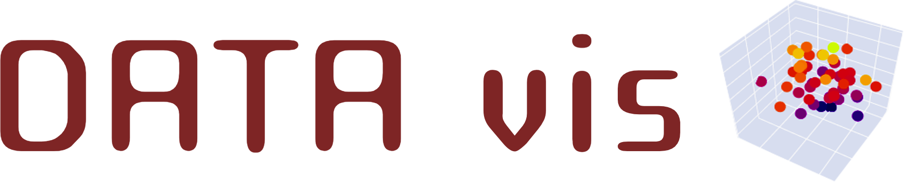
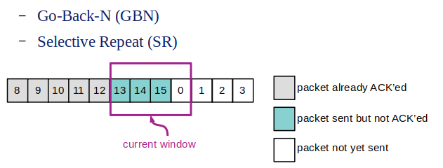
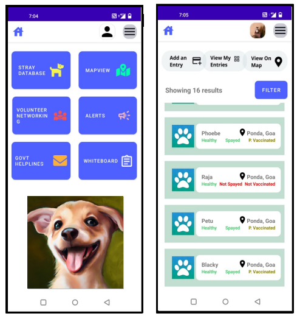

Tools, Resources and Links
 Wild Edible Berries of Goa
A writeup on the wild edible berries found around Ponda, Goa and other plateau regions of western ghats.
 https://datavis.streamlit.app
DATA vis is a Streamlit app I've created to visualize multi-dimensional data samples, particularly for black-box optimization problems. It also allows the user to build and visualize meta-models as 3D slices of multi-dimensional functions.
 Lab: Design, Simulate and Play with simple Reliable Data Transfer Protocols
Lab: Design, Simulate and Play with simple Reliable Data Transfer Protocols
This is a programming-based lab I've designed using Python's SimPy library to design, simulate and play with Reliable Data Transfer Protocols. This lab is a part of the Computer Networks course at IIT Goa. Lab: Sliding Window Protocols
This is a programming-based lab that uses Sliding Window Protocols. (follow up to the lab above)
 WAGS: Welfare and Guidance for Strays
WAGS is an Android app for Stray Animal Welfare developed by a student team at IIT Goa.
Some Tutorials I've Created for Various Courses
Useful Resources
The Missing Semester of Your CS Education An open course by MIT on useful tools such as Git, Shell Scripting, Profiling and Debugging.
Great YouTube Channels
3Blue1Brown The most intuitive explanation of ideas in Linear Algebra and Calculus.
Numberphile Numbers, geometry and other mathy stuff.
Primer Simulation of growth and evolution.
Vi Hart Creativity, math, music and Hexaflexagons.
The Engineer Guy Engineering behind the tools, technology and things of everyday.
Caspian Report Geo-political Analysis
Sebastian Lague Coding Adventures
Blogs
Wait but Why A stick-figure blog about thinking, procrastination, SpaceX and a bunch of other things.